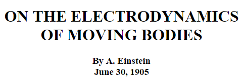
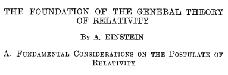
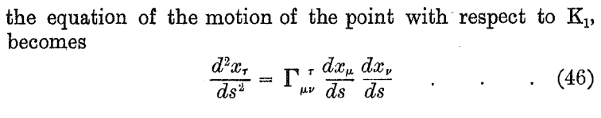
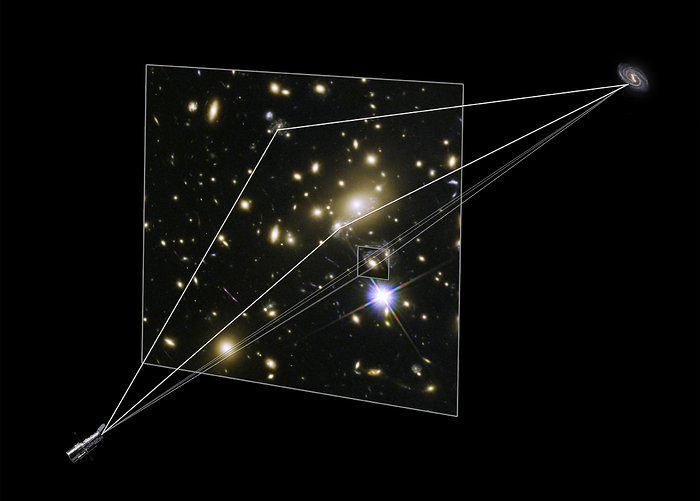

Einstein's Theories of Relativity


In the upper right rectangle is the physics of the large at high speeds. This body of theories is called Relativistic Mechanics. Einstein's Special Theory of Relativity (SR) and General Theory of Relativity (GR) describe motion and gravity just as do Newton's laws. In fact, Newton's laws are seen to be approximations of the more general SR and GR. For example, for speeds of 10% of the speed of light, Newton's formula for kinetic energy is in error by less than 1%. However for speeds of 50% of the speed of light, Newton's formula is about 20% in error, and for speeds of 80% of the speed of light the error is more than 50%.

In case you did not notice, the links on the two images above take you to the English translations of both the SR and GR papers. Even if you do not understand the mathematics contained in these papers, you owe it to yourself to just browse through the material. You would be witnessing the greatest scientific work yet produced by a human. Although these theories have been proven correct by experiment, they were conceived without the use of any experimental equipment. The author simply performed "thought experiments".
In the first theory, SR, he wondered what if we have two synchronous clocks at a point A. Now move one of the clocks at a constant velocity v in a curve so that after a time t it arrives back at the point A. Will the two clocks read the same time? Read the paper and you will find that according to the stationary clock, the moving clock will be ½t(v/c)² seconds slow, where c is the speed of light. This means that a clock on the Earth's equator runs slow as compared to a clock at the North or South Pole. Notice that the greater the velocity of the moving clock (v), the greater the time difference between the two clocks.
In the second theory, GR, he wondered what is the difference between the force you feel when you decelerate or accelerate and the force you feel due to gravity? Up until the time of his GR paper, gravity as described by Newton depends upon three factors: (1) the mass of an object, m1, (2) the mass of a second object m2 that has a mutual attraction with the first object, and (3) the distance d between the two masses. Newton's equation for the force of gravity F between two objects of mass m1 and m2 separated by distance d is:
F = G × m1 × m2 / d² (Here G is the gravitational constant.)
In Newton's equation, you can see that the force due to gravity depends upon the mass of the two objects. The implication is that there is some intrinsic property of mass that causes a gravitational force.
After a lot of thinking he concluded that in order to answer the question about acceleration force, the traditional way of thinking of time and space had to be changed. That is, there are four dimensions, not just three spatial ones and a separate time dimension. He called the concept space-time. Incidentally, this does not mean that time is the fourth dimension, rather it means that time is just one of the four dimensions. As a result, one of his conclusions is that the mere presence of mass distorts the space around it.

If you browse through Einstein's paper on GR, you will find the above equation (46) on page 179. The equation represents the motion of an object as it travels through space-time. The expression on the left-hand side of the equation represents acceleration through space-time. On the right-hand side of the equation there are three terms. The first term represented by the Greek capital letter gamma represents the physical structure of space-time (as it is affected by the mass of an object such as a star). The two remaining terms on the right-hand side of the equation represent components of the velocity of an object as it travels through the distorted space-time. We can easily see two major consequences from this equation of motion.
- If there is no distortion of space-time, that is we are in empty space, the term represented by the Greek symbol gamma is zero. So the whole right-hand side of the equation is zero. Since the left-hand side of the equation represents the acceleration of the object as it moves through space-time, this means that the acceleration of the object is zero. That is, the object undergoes no acceleration in empty space. That means that an object in motion will just stay in motion along the same path. If an object is at rest, it will remain at rest. This is just Newton's first law of motion!
- If space-time is not empty and hence is curved, then the Greek symbol gamma on the right-hand side of the equation is NOT zero, and hence there is some acceleration. This curvature of space-time gives rise to what we interpret as the "force (read: acceleration) due to gravity".
Gravitational Lensing
The event called Refsdal is the first predicted supernova. Refsdal lies within a cluster of galaxies. Two images were captured. It was calculated that the supernova event occurred in 1998, Earth time. The first image appeared in Nov of 2014, and the second image appeared in Dec 2015. How can there be two images of the same event that arrive at different times? There is a large galaxy in the cluster that lies between Refsdal and Earth. The extreme gravity from the large galaxy caused the light from Refsdal to be split and bent around the galaxy. This phenomenon is called Gravitational Lensing. The light from Refsdal was split into two separate pieces and each took a separate path to Earth. Therefore they both arrived at Earth at different times. Because the light was bent, the two pieces appear to be coming from two different locations. This video shows the two pieces superimposed into one view that shows their apparent locations relative to each other. In Nov 2014 scientists first saw one of the light pieces where the supernova appeared as four light sources arranged in a circle around the obstructing galaxy. This distortion is called an Einstein Cross. The four light sources are caused by Gravitational Lensing. The scientists saw this as an opportunity to predict when another piece of light from the same supernova would arrive at Earth. According to their calculations, the second piece would arrive some time between the publishing of the paper in Oct 2015 and the beginning of 2016. The light arrived on Dec 11, 2016.
The image below shows a diagram of the paths of the light that were lensed by the galaxy that was positioned between the supernova and Earth. The path shown in the upper left is the position of Refsdal as it would have appeared in 1998 had there been a telescope aimed at the supernova. The lower right path is the actual galaxy that was causing the Gravitational Lensing where the Einstein Cross was visible. The middle path shows the position when viewing the Dec 2015 piece of light. Remember that we are viewing one event through the arrival of its light on Earth at two different times.

This is the scientific paper, written in Oct 2015 that presents the prediction of the second piece of light to arrive in Dec 2015. I present this paper for viewing in order that you get an idea of what a real scientific paper looks like. Of course I would not expect many people to read the details of this paper. What is important here is that you get a first-hand experience of the rigor, detail, and logic that all scientific papers contain. All real scientific papers are presented in this format. This particular paper uses five different Gravitational Lens Models to make predictions that are all based on the same data. It starts out in the Introduction by citing the history of Gravitational Lens Modeling and gives credit to the work that has been done before. It then presents samples of the data used in the analysis as well as how the data were collected. Next is a presentation of each Model. Next is a comparison of the Models' predictions compared to observed data. The paper then compares present results with previous model results, and finally makes conclusions based on the results of the calculations found in the models. Notice that a conclusion was not pre-supposed and then data was searched for in order to support the pre-supposed conclusion. That, of course, would not be considered science.
For a visual explanation of how the Doppler effect relates to light from moving objects, see this Doppler effect illustration.